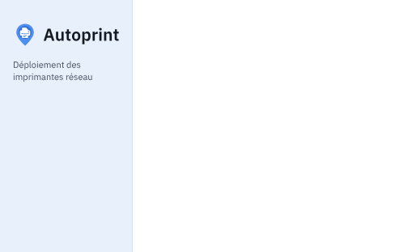

{{> head title="Ressources graphiques · Autoprint" root="../"}}
<body>
{{> defs}}
{{> theme}}
{{> barre interface="Ressources" ecran="Logo, icônes, images MSI, polices" iface="ressources" note="Fichiers dans livrables/ressources et livrables/theme"}}
<main class="mq-index">
  <h1>Ressources graphiques</h1>
  <p>Les fichiers prêts à intégrer, générés à partir de la charte. Le logo garde la punaise et l'imprimante d'origine, redessinées à plat.</p>

  <section class="mq-group" id="logo">
    <h2><svg class="ic"><use href="#i-sell"/></svg>Logo</h2>
    <p>SVG vectoriels (le nom est vectorisé, il ne dépend pas de la police installée) et PNG 512 px</p>
    <div class="rs-grid">
      <figure class="rs-tile rs-light"><figcaption>autoprint-horizontal.svg · fond clair</figcaption></figure>
      <figure class="rs-tile rs-dark"><figcaption>autoprint-horizontal-sombre.svg · fond sombre</figcaption></figure>
      <figure class="rs-tile rs-light"><figcaption>autoprint-symbole.svg · symbole seul (fonds clair et sombre)</figcaption></figure>
      <figure class="rs-tile rs-light"><figcaption>autoprint-symbole-petit.svg · simplifié pour 16 à 24 px</figcaption></figure>
    </div>
  </section>

  <section class="mq-group" id="icone">
    <h2><svg class="ic"><use href="#i-desktop_windows"/></svg>Icône d'application et favicon</h2>
    <p>autoprint.ico contient 16, 20, 24, 32, 40, 48, 64 et 256 px ; la version simplifiée sert jusqu'à 24 px, là où l'icône vit dans la zone de notification</p>
    <div class="rs-grid">
      <figure class="rs-tile rs-light rs-sizes">
        <span></span>
        <figcaption>16 · 20 · 24 · 32 · 48 · 64 px, fond clair</figcaption></figure>
      <figure class="rs-tile rs-dark rs-sizes">
        <span></span>
        <figcaption>Même série sur la barre des tâches sombre</figcaption></figure>
      <figure class="rs-tile rs-light"><figcaption>favicon-32.png, favicon-192.png, favicon.svg (console)</figcaption></figure>
    </div>
  </section>

  <section class="mq-group" id="msi">
    <h2><svg class="ic"><use href="#i-download"/></svg>Images des installeurs MSI</h2>
    <p>BMP 24 bits pour WixUI. Le texte de Windows Installer s'écrit en noir sur les zones blanches : à gauche du bandeau, à droite de l'accueil.</p>
    <div class="rs-msi">
      <figure><figcaption>banniere-493x58.bmp · WixUIBannerBmp (haut des pages intérieures)</figcaption></figure>
      <figure><figcaption>accueil-493x312.bmp · WixUIDialogBmp (pages Bienvenue et Fin)</figcaption></figure>
    </div>
  </section>

  <section class="mq-group" id="polices">
    <h2><svg class="ic"><use href="#i-category"/></svg>Polices</h2>
    <p>IBM Plex Sans (400, 500, 600) et IBM Plex Mono (400, 500), licence SIL Open Font License 1.1 : .woff2 pour la console, .ttf pour WPF</p>
    <div class="rs-type ap-card">
      <span class="t1">Parc d'imprimantes</span>
      <span class="t2">Le spouleur est contourné et le flux part directement vers l'adresse IP de l'imprimante.</span>
      <span class="t3">10.12.4.21 · P-00412 · 26.11.9.1</span>
      <span class="t4">àâçéèêëîïôöùûüÿ œæ ÀÉÈÇ « guillemets » – 0123456789</span>
    </div>
  </section>

  <section class="mq-group" id="themes">
    <h2><svg class="ic"><use href="#i-settings"/></svg>Fichiers de thème</h2>
    <p>Générés à partir de tokens.json par sources/build_theme.py ; chaque dossier a un LISEZMOI.md d'intégration</p>
    <div class="mq-links rs-files">
      <a href="#themes"><b>theme/console/autoprint-theme.css</b><span>Radzen 12, thème Standard : variables --rz-* clair et sombre, classes ap-*</span></a>
      <a href="#themes"><b>theme/client/Autoprint.Theme.xaml</b><span>Styles du client, avec Autoprint.Colors.Light.xaml et .Dark.xaml, et AutoprintTheme.cs pour suivre le thème de Windows</span></a>
      <a href="#themes"><b>theme/installeur/Autoprint.Installer.Theme.xaml</b><span>Autonome, clair, sans bibliothèque tierce, styles implicites</span></a>
    </div>
  </section>
</main>
</body>
</html>
